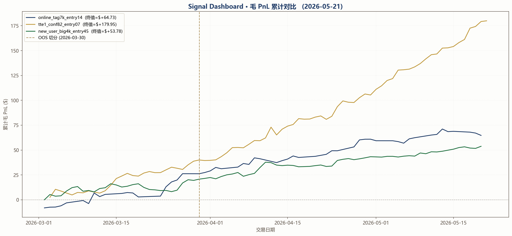
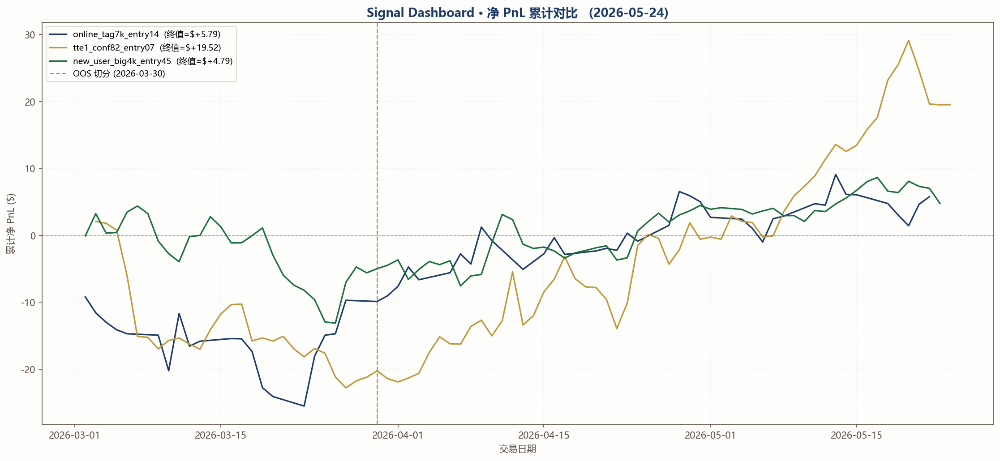

5min BTC · Rust Bot Dashboard RUST
自给自足：每天自行刷新源数据 + 跑线下回测 + 实盘 PnL + tie-out，验证新 Rust bot 行为，并导出 user_tag 给交易系统。
本 dashboard 自给自足：每天 UTC 00:00 自行刷新源数据
（
data_update + _refresh_data.py →
trades_alt_5min / orderbook_prices /
market_5min_btc），自跑 3 个信号的线下回测，拉实盘 PnL，做
tie-out，并把 user_tag 导出到交易系统 + S3。不依赖任何外部项目产出。
累计 PnL 对比（全部 3 信号）
Gross PnL — 不扣手续费 / 滑点

Net PnL — 0.072 fee + 0.005 spread

分窗口指标（净 PnL 口径）
指标近 24 小时滚动
| 信号 | Sharpe | 终值净 PnL | 进场市场 | 可评估市场 | 进场率 | 胜率 | Net ROT | Gross ROT | 交易日数 |
|---|---|---|---|---|---|---|---|---|---|
online_tag7k_entry14线上 · pnl_cumsum · TAG=$7,000 · Entry=14% · 跳过美东周末 | -19.60 | $-1.18 | 31 | 291 | 10.7% | 58.1% | -0.0381 | -0.0185 | 2 |
tte1_conf82_entry07TTE=1 confidence · conf=82% · Entry=7% | 11.38 | $1.59 | 130 | 291 | 44.7% | 75.4% | 0.0229 | 0.0387 | 2 |
new_user_big4k_entry45new_user (first-day) · big_thr=$4,000 · Entry=45% · TTE 1-4 earliest-trigger | — | $0.13 | 2 | 291 | 0.7% | 50.0% | 0.0642 | 0.0775 | 1 |
指标近 7 日滚动
| 信号 | Sharpe | 终值净 PnL | 进场市场 | 可评估市场 | 进场率 | 胜率 | Net ROT | Gross ROT | 交易日数 |
|---|---|---|---|---|---|---|---|---|---|
online_tag7k_entry14线上 · pnl_cumsum · TAG=$7,000 · Entry=14% · 跳过美东周末 | -21.40 | $-6.78 | 135 | 2019 | 6.7% | 54.8% | -0.0502 | -0.0312 | 6 |
tte1_conf82_entry07TTE=1 confidence · conf=82% · Entry=7% | 13.26 | $7.99 | 1305 | 2019 | 64.6% | 72.7% | 0.0102 | 0.0265 | 8 |
new_user_big4k_entry45new_user (first-day) · big_thr=$4,000 · Entry=45% · TTE 1-4 earliest-trigger | 6.50 | $2.79 | 63 | 2019 | 3.1% | 42.9% | 0.0442 | 0.0678 | 7 |
指标OOS 全样本
| 信号 | Sharpe | 终值净 PnL | 进场市场 | 可评估市场 | 进场率 | 胜率 | Net ROT | Gross ROT | 交易日数 |
|---|---|---|---|---|---|---|---|---|---|
online_tag7k_entry14线上 · pnl_cumsum · TAG=$7,000 · Entry=14% · 跳过美东周末 | 2.45 | $10.85 | 1423 | 14439 | 9.9% | 64.6% | 0.0076 | 0.0278 | 45 |
tte1_conf82_entry07TTE=1 confidence · conf=82% · Entry=7% | 1.65 | $12.89 | 7533 | 14439 | 52.2% | 69.0% | 0.0030 | 0.0194 | 53 |
new_user_big4k_entry45new_user (first-day) · big_thr=$4,000 · Entry=45% · TTE 1-4 earliest-trigger | 4.17 | $16.24 | 711 | 14439 | 4.9% | 39.2% | 0.0228 | 0.0459 | 52 |
排错速查
Rust bot 没产 startup_*.json？
tie-out 会直接报 No startup snapshots — nothing to compare。
去 poly_temp_bot_stable/state/bitcoin_5min/ 看是否有
startup_*.json；没有的话 Rust bot 当天没启动。
信号回测找不到数据？
本 dashboard 自跑 data_update + _refresh_data.py。
若信号页缺失，看 logs/ 里 data_update / refresh_data
是否失败（失败会中止整条 pipeline）。
activity API 一直空？
确认 funder address (config.yaml > funder_address) 和
online_pnl/calc_pnl.py 里的 ADDRESS 一致。
Rust 钱包是 brand new，前几天可能本来就没几笔交易。
SR 不一致（散点偏离 y=x）？
如果 Pearson r < 0.9 或 offset 明显，说明 Rust bot SR 计算或
smart-maker tag 加载有 bug。先检查 user_tag_current.json
的 max_date 和 n_smart_makers 是否合理。